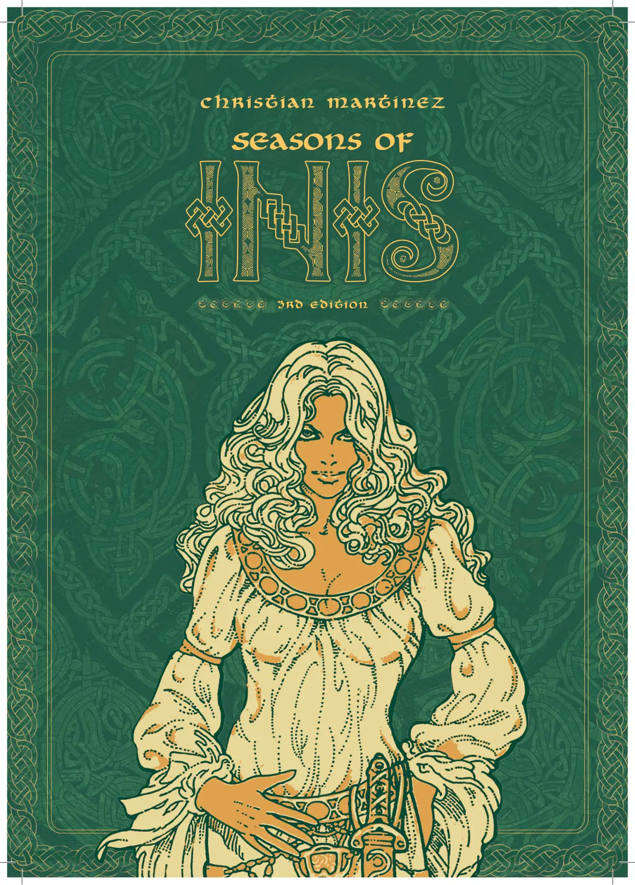
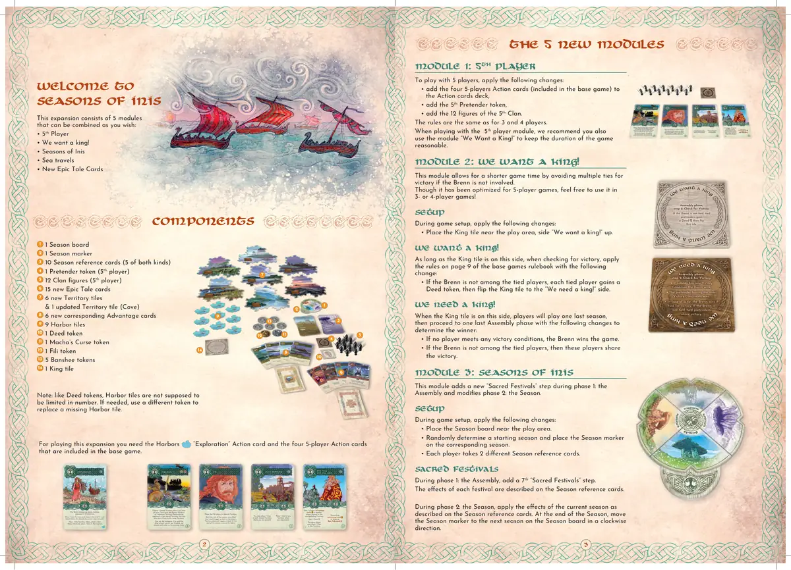
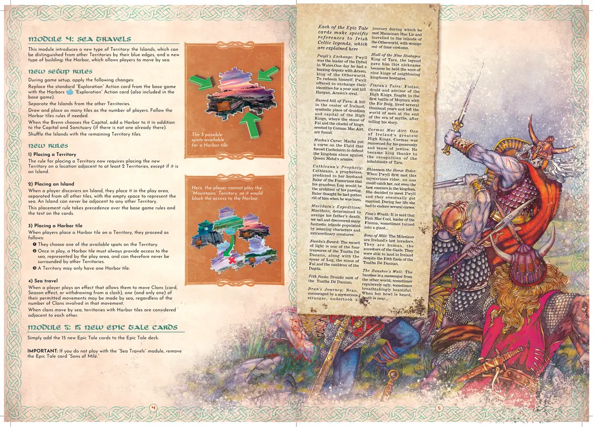
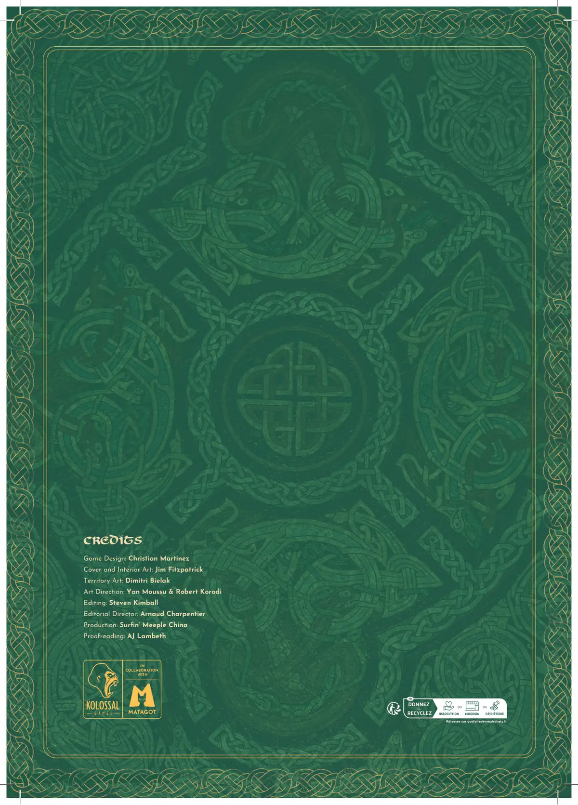

🍀 翠屿秘境（INIS）
Inis · 设计：Christian Martinez · Matagot 出版 · 2–4 人 · 官方英文规则书全文翻译（12 页 · AI 辅助机翻）
本页收录《翠屿秘境（INIS）》（Inis, 2016）的原版官方规则书全部 12 页（底本：Matagot / Kolossal Games 官方上传（BGG Files），inis-seasons-rulebook-2025-printing），逐页随图排列，点击任意图片即可放大查看；每页下方默认折叠了该页的 AI 辅助中文机翻对照，需要时可展开。规则内容归 Matagot 及版权方所有，收录仅供个人学习查阅。
整理说明：机翻对照按本站术语口径对齐（牌库/手牌/回合/轮/板块/指示物等），PDF 图文混排页的语序可能与原书视觉顺序略有出入；规则细节请一律以页面上方原书页面为准。

📝 第 1 页 AI 机翻对照（点击展开）
CHRISTIAN MARTINEZ
INIS_REGLES_DEF_EN.indd 1
13/07/2016 20:23

📝 第 2 页 AI 机翻对照（点击展开）
玩家们渴望在他们新发现的土地上当选为至高国王。每轮，玩家们会检查是否有玩家已被当选。要当选，玩家必须满足最多的胜利条件：
• 存在于六个或更多领土中。
• 成为六个或更多敌对氏族的总酋长。
• 存在于拥有六个或更多圣所的领土中。
概述
每个游戏回合包含两个阶段。
首先是集会阶段，在此期间玩家检查胜利条件，确定谁是酋长，并选择行动卡牌。
接下来是季节阶段，在此期间玩家从手牌中打出卡牌。
重要提示：在《Inis》中，玩家在游戏中执行任何行动（放置新氏族、移动氏族、建造圣所等）的唯一方式就是打出卡牌。因此，在集会阶段选择哪些卡牌对您赢得游戏至关重要。
《Inis》发生在古代凯尔特人的鼎盛时期，当时历史与传说融为一体。
玩家们是酋长，带领他们的氏族跨越海洋从爱尔兰来到一个新发现的岛屿。他们定居土地，探索周边地区，从矿山中收获资源，并建造城堡和圣所以保护自己。
游吟诗人传颂他们神祇和英雄的传说，德鲁伊担任顾问，而能工巧匠则使凯尔特文明永垂不朽。
每位酋长都相信自己对这个新岛屿的王位拥有最合法的宣称。只有时间会告诉他们谁将登上宝座，成为这片新领域的至高国王！
2至4名玩家；60分钟
游戏目标
目录
组件............................................第3页
设置......................................................第5页
游戏进行....................................第6页
冲突...................................................第8页
胜利条件...................................第10页
游戏结束......................................第10页
组件
16个领土板块
20个建筑
10个城堡
10个圣所
67张卡牌
17张行动卡
16张优势卡
30张史诗传说卡
4张参考卡
15个指示物和标记
1个布伦标记
1群乌鸦标记
4个觊觎者标记
8个契约标记
1个节日标记
48个氏族棋子（每种颜色12个）
每张史诗传说卡都特别提到了爱尔兰凯尔特传说，在此解释：
迪尔姆德和格兰妮：格兰妮与伟大的战士芬恩·麦克库尔订婚，但他比她的父亲还老。在婚礼当天，她说服迪尔姆德与她私奔。芬恩无休止地追捕他们
艾里乌：达努神族向最近到达爱尔兰的迈尔人承诺，以艾里乌的名字命名该岛作为交换
她的帮助。她是拟人化爱尔兰的女神。
战斗狂热：一些战士，如库丘林，可能会经历扭曲痉挛，这完全扭曲了他们的身体，并赋予他们狂热的战斗精神。
凯尔诺斯的庇护所：凯尔诺斯是野蛮人、自然、生命、森林和生育力的化身。他是一个与其他神祇分离的神秘神。
彼世：提尔纳诺是神、逝者和无尽欢乐之地；它是永恒青春的领域，神祇在此避难。凡人有时能够进入它...
巴洛之眼：巴洛，弗莫尔人的国王和北方岛屿的恶魔，他的额头上有邪恶之眼，他可以用它来击败敌人。
莫伊图拉之战：第二次莫伊图拉之战对抗了达纳神族和弗莫尔人，并且是毁灭性的。在战斗中，卢格杀死了他的祖父巴洛，弗莫尔人在战后离开了爱尔兰。
德尔德丽的美丽：德尔德丽被康乔巴尔·麦克·内萨国王所爱，她的美丽是许多悲剧和屠杀的原因，然后她自杀了。
库丘林的故事：库丘林，最伟大的凯尔特英雄之一，是神卢格的儿子。他独自保卫阿尔斯特对抗梅王后的冠军。他也拒绝了莫里根的示好。
达格达的战棍：凭借这件武器，达格达拥有杀死也能恢复生命的礼物。
达格达的竖琴：这神圣的竖琴演奏所有歌曲，特别是悲伤、欢笑和睡眠的歌曲。达格达演奏这把竖琴为自然和四季赋予节奏。
卢格的长矛：神卢格的长矛确保其所有者获得胜利。
达格达的魔锅：这个丰盛的魔锅可以喂养所有部落而永不匮乏。它也可以让死者复活。
图安的记忆：图安是一位德鲁伊和隐士，通过变成不同的动物存活了几个世纪。他在达纳神族和弗莫尔人到达爱尔兰之前就在这里。他见证了五次征服，并与圣帕特里克交谈。他是历史的记忆。
莫里根：她是战争和主权女神，也是达格达的妻子。她有时以乌鸦的形式出现。
卡思巴德的言语：卡思巴德是一位德鲁伊、先知和战士。他是康乔巴尔·麦克·内萨国王的父亲，也是库丘林的导师。
冠军的份额：盛宴的最佳部分。它为最杰出的战士保留，并可能导致许多争论。
法尔之石：由达纳神族带到爱尔兰，据说当石头与值得统治的人接触时会咆哮。
安格斯的诡计：安格斯，达格达的儿子，通过问他是否可以"日夜"住在那里，即永远住下去，从而占有了他父亲的城堡...
塔尔蒂的土地：弗博尔格的女儿
神话背景
Tailtu 开垦了森林，为耕作做好准备，最终因精疲力竭而死。她的养子 Lug 为纪念她而设立了收获节 Lughnasadh。
Breas 的暴政：当 Nuada 退位时，"美丽"的 Breas 成为 Tuatha Dé Danann 的国王。但他是一个非常吝啬贪婪的国王，他不分享自己的财富，并且鄙视吟游诗人。一位诗人创作了一首针对他的可怕讽刺诗后，他也退位了。之后，他带领 Fomorians 人与 Tuatha Dé Danann 人开战，这场战争将在 Moytura 第二场战役后结束。
Ogma 的雄辩：Ogma 是 Tuatha Dé Danann 的成员，是雄辩和知识的大师。他也是诗人和战士，他发明了 Ogham，神圣的字母表。
Streng 的决心：作为 Fir Bolg 的冠军，他在 Moytura 第一场战役中砍断了 Nuada 的手。即使在失败的边缘，他和三百名幸存的战士仍然以如此坚强的意志战斗，以至于 Tuatha Dé Danann 出于尊重，将 Connacht（爱尔兰西北部的一个地区）赐予了他。
The Dagda：仁慈的神 The Dagda 是部落的保护者。他是德鲁伊、战士、智者、生死预言者，以及时间和季节的主宰者。
Manannan 的马：Mannanan mac Lir 统治海洋，守护通往彼世的边界。他用泡沫创造了马匹，这些马匹在陆地、阴影和迷雾中驰骋...
Dana 的孩子们：Tuatha Dé Danann 来自北方岛屿，定居在爱尔兰。他们与 Fir Bolg 战斗，然后与 Fomorians 战斗。后来，他们撤退到彼世，为 Milesians 人让路，为人类让路。
The Fianna：他们是一支神话战士的队伍。他们的领袖 Fionn mac Cumhaill 是伟大的凯尔特英雄之一，是战士、诗人和无与伦比的魔法师。
Maeve 的财富：作为 Connacht 的女王，Maeve 与她的人民分享财富。她向 Ulster 国王 Conchobar mac Nessa 开战，目的是捕获 Cooley 的棕色公牛。
Lug Samildanach：Lug 是 Tuatha Dé Danann 的成员，通过他的祖父 Balor 与 Fomorians 人有血缘关系。他是所有艺术和科学的大师。因此，Nuada 让他在 Moytura 第二场战役期间领导 Tuatha Dé Danann。
Nuada 银手：Tuatha Dé Danann 的国王，当他在与 Streng 的战斗中失去手臂时，他不得不退位。当 Dian Cecht 为他制作了一个银制假肢时，他重新获得了统治权。他在 Moytura 第二场战役中被 Balor 杀死。

📝 第 3 页 AI 机翻对照（点击展开）
布伦
布伦是临时领袖，直到有人被任命为至高国王。他在游戏开始时随机确定，并且在每次集会阶段，布伦的头衔会传递给首都领土的首领。布伦组织集会，并且在游戏结束时，如果与其他玩家平局，则具有优势。
乌鸦群
这个指示物显示了解决回合顺序的方向：顺时针或逆时针。它在每次集会时由布伦抛掷（见第6页）。
觊觎者
当玩家满足胜利条件的要求时，他获得一个觊觎者指示物，以表明他是王位的觊觎者。只有拥有觊觎者指示物的玩家才能在集会期间尝试宣称胜利（见第6页）。
功绩
功绩通过行动或史诗传说卡牌获得。功绩是一种"万能牌"，允许玩家补充一个胜利条件（见第10页）。
节庆
当在季节阶段打出"节庆"行动卡时使用这个标记。
领土
新领土总是放置在至少两个相邻的领土旁边。当放置新领土时，其对应的优势卡从优势牌库中取出，并放置在游戏区域面朝上。
氏族
每个棋子代表一个氏族。每位玩家拥有12个同色棋子。有多种雕塑造型，但不同的雕塑造型不影响游戏玩法。如果一位玩家的所有12个棋子都在版图上，他无法招募更多氏族，直到其中一些棋子返回到他的储备区。
建筑
有两种建筑类型：城堡和圣所。一个领土可以容纳的建筑数量没有限制。如果玩家试图在一个领土上放置新建筑，但储备区中已没有该类型的建筑，他则无法放置这种类型的建筑。建筑不属于任何特定玩家。
城堡
城堡允许玩家在冲突中保护他们的氏族。每个城堡在冲突期间可以容纳一个氏族（见第8页）。一个城堡比其他城堡更大：它是首都（见第5页）。
圣所
圣所是实现一个胜利条件所必需的。
指示物与标记
组件
INIS_REGLES_DEF_EN.indd 3
13/07/2016 20:23

📝 第 4 页 AI 机翻对照（点击展开）
查看1名对手的手牌中的行动卡。
然后你可以将1个或多个你的氏族从1个领土移动到1个相邻领土。
侦察兵与间谍
行动卡
在季节阶段，行动卡允许玩家执行重要行动，例如招募新氏族或放置新的圣所。
如何获取：这些卡牌在每轮开始的集会阶段进行抽取。
可保留：这些卡牌不会在轮与轮之间保留。如果玩家在季节阶段没有打出手中的所有行动卡，它们将被弃置并与其他行动牌洗在一起，为下一轮做准备。
优势卡
如何获取：在集会阶段，每个领土的首领会获得其对应的优势卡。
可保留：一旦优势卡在玩家手中，该玩家会保留整轮，直到他选择打出它。即使某个效果导致他不再是该领土的首领，他仍然会在手中保留该卡（并且可以打出它）直到回合结束。这些卡牌不会在轮与轮之间保留，但只要他是该领土的首领，同一玩家可以在连续的轮中拥有相同的优势卡。
史诗传说卡
这些卡牌唤起了凯尔特神明和英雄，激励氏族完成传奇伟业。
如何获取：当某些游戏效果发生时，例如"吟游诗人"行动卡或放置新的圣所时，会抽取这些卡牌。
可保留：这些卡牌在被打出前会在轮与轮之间保留。
卡牌
每张卡牌都有特定类型（行动、优势和史诗传说）、时机图标（季节或三曲花纹）和效果。玩家将卡牌保留在手中，对对手保密，但手中的卡牌数量和卡牌类型（可见于卡牌背面）不是秘密。玩家在打出卡牌后会将其弃置。
• 时机（左上角图标）
有两种不同的图标表示卡牌何时可以打出。每张卡牌至少有一个这些图标，有些卡牌有两个：
季节卡
三曲花纹卡
季节卡在所有者的回合季节阶段打出。
三曲花纹卡表示可以打出的特定时机。
• 卡牌类型（由卡牌颜色表示）
卡牌分为三种类型：行动、优势和史诗传说。每种卡牌根据其类型以不同方式获取：
示例
行动卡"大师工匠"同时具有时机图标：季节和三曲花纹。季节图标对应左侧效果，三曲花纹符号对应右侧效果。
想要使用这张卡牌右侧效果的玩家，只能按照卡牌上指定的时间和条件进行，在这种情况下是"在打出一张史诗传说卡之后。"
卡牌详情
时机
（三叉戟和/或季节）
时机提醒
仅在4人游戏中使用的卡牌
效果
卡背的颜色
表示卡牌类型：
史诗传说
卡牌
优势
卡牌
行动
卡牌
标题
图标
这些图标表示卡牌的总体
效果：
建造
移动
招募
这个图标表示打出
该卡牌可能引发冲突。
巴洛之眼
从任意领土上移除1个氏族。
在冲突期间，在
城堡步骤结束时：
将该领土中所有氏族从城堡中取出。
这些现在是暴露的氏族。
战狂
在你所在的每个领土中，
你可以根据该领土中的城堡数量
放置1个氏族。
工匠与农民
山丘
当山丘中对你发动
攻击行动时：
忽略该攻击；你不移除氏族
或弃置行动卡牌。
摸1张
史诗传说卡牌 。
在你发动1个行动
移除了1个或更多
敌方氏族后：
获得1项功绩。
吟游诗人
或者
在你打出1张季节卡牌后：
将任意1个氏族从毗邻失落山谷的领土移入其中。这次移动
不会引发冲突。
失落山谷
如果可能，弃置1张卡牌，
然后摸1张史诗传说卡牌 。
在你打出
1张史诗传说卡牌后：
不弃置它，
而是将其交给任意其他
玩家，并获得
1项功绩。
大师工匠
或者
INIS_REGLES_DEF_EN.indd 4
📝 第 5 页 AI 机翻对照（点击展开）
• 在2人或3人游戏中，将右下角有数字4的行动1卡牌放回盒中；它们仅在4人游戏中使用。
• 每位玩家选择一种颜色，并将他的12个氏族棋子2放在自己面前；这是他的预备区。
• 将 deed 指示物3、觊觎者指示物4和节日标记5放在游戏区域附近。
• 洗混史诗传说卡6并将它们面朝下放置成一堆。
• 洗混领土板块7并将它们面朝下放置成一堆放在游戏区域附近。
• 抽取数量与玩家数量相等的领土板块8，并将它们面朝上且相互交错地放置在游戏区域中央。每个板块必须与其他两个板块相邻。寻找与游戏中领土匹配的优势卡9，并将它们面朝上放置在游戏区域附近，使每张卡牌都可见。将其他优势卡10面朝下放置成一堆。
• 将 Brenn 标记11随机交给一位玩家。
• Brenn 选择一个领土作为首都，并将塑料首都12和一个圣地13放置在那里。
• Brenn 将乌鸦群指示物14像抛硬币一样翻转。朝上的面表示游戏开始时的回合顺序方向。
• 从 Brenn 开始，按照乌鸦群指示物指示的方向，每位玩家轮流在一个领土上放置一个氏族，直到每位玩家在版图上各放置了两个氏族。
发现模式
对于你的第一局 Inis 游戏，我们建议你玩发现模式。规则不变，但你必须按以下方式设置游戏：
- 不抽取领土板块来创建起始游戏区域，而是使用这些领土：
- 2人：山谷和海湾
- 3人：山谷、海湾和平原
- 4人：山谷、海湾、平原和丘陵。
- 在创建领土板块堆之前，寻找这些板块：草地、迷雾之地、森林、提尔纳诺之门、高地和山脉。洗混这些板块并将它们面朝下放置，创建板块堆的底部。
- 洗混剩余板块并将它们放在板块堆顶部。
设置
📝 第 6 页 AI 机翻对照（点击展开）
- 集合阶段：任命布伦，检查胜利条件，设置回合顺序，酋长们获得优势牌，玩家们选择行动牌。
- 季节阶段：这是游戏的核心，在此期间玩家通过打出手牌中的牌来执行各种行动和效果。
第一阶段：集合
按顺序完成以下六个步骤：
酋长事务
1. 任命布伦
首都领土的酋长成为布伦并获得布伦标记。如果首都领土没有酋长，布伦不会改变——即使当前布伦的氏族都不在首都领土。布伦只能在此刻改变，不能在季节阶段改变。
2. 检查胜利条件
检查是否有玩家获胜。胜利条件在第10页有进一步说明。玩家们将他们拥有的所有觊觎者指示物返还到供应区。
3. 获取优势牌
每个领土的酋长获得该领土对应的优势牌。如果一个领土没有酋长，优势牌保持正面朝上放在游戏区域附近。
神谕
4. 翻转乌鸦群标记
重要：任何引用"下一位玩家"或"按回合顺序"的游戏效果都使用乌鸦群标记正面朝上那一面所示的顺序。
季节准备
5. 发放行动牌
对于4人游戏，布伦拿走所有17张行动牌，洗牌，随机将一张牌面朝下放在一边，然后给每位玩家发4张牌。对于3人游戏，同样操作，但只有13张牌，因为在设置过程中右下角有数字4的牌已经放回了盒中。对于2人游戏，请参见第11页的"2人规则"部分。
- 行动牌选择（3-4人）
- 每位玩家查看自己的4张行动牌，选择一张保留，将另外三张按乌鸦群标记所示传递给下一位玩家。
- 接着，每位玩家将他保留的那张牌加上传递给他的三张牌。他查看全部四张行动牌，选择两张保留，将另外两张传递给下一位玩家。
- 最后，每位玩家将他保留的两张牌加上传递给他的两张牌。他查看全部四张行动牌，选择三张保留，将剩下的一张传递给下一位玩家。
在集合阶段结束时，每位玩家手中有四张行动牌，可能还有一些优势牌和史诗传说牌。
注意：Inis处理牌选择的方式与大多数使用牌选择机制的游戏不同。例如，在Inis中，玩家有可能在第一步中保留一张牌，然后在第二步中将其传递给邻居。这使玩家能够适应并有机会在回合后期看到可能更吸引人的牌时选择它们。
领土酋长
酋长是多个游戏效果使用的重要概念。
在一个领地中拥有最多氏族的玩家是该领地的酋长。如果平局，则该领地没有酋长。
示例：摩尔地区包含4个绿色氏族、3个蓝色氏族和2个白色氏族。绿色玩家在这里拥有最多的氏族，因此她是摩尔地区的酋长。
示例
首都地区包含1个橙色氏族和1个白色氏族。由于在这个地区拥有最多氏族的数量相同，因此这里没有酋长。尽管他的氏族都不在首都地区，蓝色玩家仍然是布伦。
回合顺序
是顺时针
回合顺序
是逆时针
游戏进行
游戏进行一系列轮次，每轮包含两个阶段：
INIS_REGLES_DEF_EN.indd 6
📝 第 7 页 AI 机翻对照（点击展开）
第二阶段：季节
布伦通过打出第一张牌来开始季节，这张牌必须是季节牌。
然后下一位玩家可以选择：
• 打出一张季节牌
• 跳过
• 拿取一个僭越者指示物
这会继续进行，每位玩家按顺序轮流执行上述三个选项之一，直到所有玩家连续跳过，这标志着季节阶段结束。然后新的一轮从集会阶段开始。
打出季节牌
季节牌可以是行动牌、优势牌或史诗故事牌。玩家打出牌，执行指示的效果，然后弃置该牌：
• 行动牌被弃置到一个面朝下的弃牌堆。只有在卡牌效果允许的情况下，玩家才能查看这个弃牌堆中的牌，例如"德鲁伊"行动牌。
• 每张打出的优势牌被放置在游戏区域附近，牌面朝下，卡背可见。
• 史诗故事牌被弃置到一个面朝上的弃牌堆，玩家可以随时查看这个弃牌堆中的牌。
跳过
玩家不打出任何牌，直接跳过。如果轮次再次回到他，他将能够再次打出牌。
拿取僭越者指示物
玩家必须满足至少一个胜利条件，并且不能已经拥有僭越者指示物。他从供应区拿取一个僭越者指示物，并将其放置在自己面前。这个指示物会保留到集会阶段，即使后来玩家不再满足任何胜利条件。
特殊情况
如果玩家在任何领土中都没有氏族
当玩家的回合开始时，如果他在任何领土中都没有氏族，他必须弃置一张地契牌（如果他有的话）。然后，无论他是否弃置了地契牌，他都要在任何领土中总共放置两个氏族。之后他可以正常进行他的回合：打出季节牌、跳过或拿取僭越者指示物。
注意：跳过是一个有用的选项，可以让你推迟决策，将牌留到后面使用——但这可能有风险。如果你跳过，并且在你之后所有其他玩家也选择跳过，季节结束，所有玩家必须弃置他们的行动牌。
示例
在他的回合中，橙色玩家选择拿取一个僭越者指示物，因为他满足一个胜利条件（他在三个领土中，这些领土共有六个圣地）。在下一个集会阶段，橙色玩家将被检查胜利条件的玩家之一。
季节结束
当所有玩家连续跳过时，季节结束。玩家保留手中的所有史诗故事牌，但他们必须弃置所有行动牌。如果玩家手中有一张优势牌，而他不再是该领土的首领，他将该优势牌面朝上放置在游戏区域附近。
提醒：放置一个氏族
当玩家打出一张标有"放置1"的牌时
"氏族，"他从自己的储备中拿取这些氏族，而不是从其他玩家的储备中。
提醒：
如果在季节结束时，节庆标记位于某个领土上，则将其移除并放置在游戏区域附近。
提醒：三叶草卡牌只能在卡牌上标明的特定时机打出。
当卡牌被打出时，它是对某个行动的响应。三叶草卡牌按类型弃置，就像季节卡牌一样（参见左侧的"打出季节卡牌"）。
重要！
• 可以对一个行动打出一张或多张三叶草卡牌。
• "禁制"（Geis）三叶草卡牌可以忽略行动卡牌的效果，但只能在当前玩家完全声明其行动后打出（他针对哪个氏族，从哪个领土移动等）。
• 注明"在你打出季节卡牌之后..."的三叶草卡牌，必须等到完全解决季节卡牌的效果后才能打出，这包括任何已发起的冲突。
当对手打出行动卡牌时：
忽略刚刚打出的行动卡牌的效果并将其弃置。
GEIS
📝 第 8 页 AI 机翻对照（点击展开）
当一个或多个氏族被移动到已有任何对立氏族存在的领土时，就会发生冲突。此外，一些卡牌效果可以在没有任何氏族移动的情况下引发冲突。
被"放置"在领土中的氏族（如"新氏族"行动卡）不会引发冲突。
提醒一下，能够引发冲突的卡牌在其右上角显示此符号：
当冲突被引发时，进入领土的氏族所有者是"煽动者"。当是卡牌引发冲突时，煽动者玩家会在卡牌上标明。然后，领土中存在的氏族需要决定如何最好地解决他们之间的分歧——无论是通过激进方式还是和平方式。
冲突一旦发生，玩家必须立即解决冲突，然后才能继续进行本轮。
如果单个效果导致多个冲突（如"迁徙"行动卡），煽动者选择先解决哪个冲突。解决完第一个冲突后，他选择接下来解决哪个冲突，以此类推，直到所有冲突都得到解决。
冲突分两个步骤解决：
1. 堡垒
2. 解决方案
1- 堡垒
在此步骤中，氏族可以躲藏到冲突领土中的堡垒中。
在堡垒中的氏族受到保护，不会以任何方式参与冲突。冲突结束后，氏族离开堡垒。
从煽动者之后的下一位玩家开始，按回合顺序，每位玩家（煽动者除外）可以将他在冲突领土中的一个氏族放入一个未被占用的堡垒。这可能需要多轮时间；当所有堡垒都被占用或没有玩家希望占用它们时，进入解决方案步骤。
每个堡垒只能保护一个氏族。
暴露的氏族
在冲突期间，冲突领土中不在堡垒中的氏族是"暴露的"。
2- 解决方案
从煽动者开始，按回合顺序，每位拥有一个或多个暴露氏族的玩家执行一次机动。继续轮流执行机动，直到冲突结束。
非常重要！在每次机动前，拥有暴露氏族的玩家可以讨论并同意立即结束冲突。
机动
如果冲突尚未结束，玩家必须执行一次机动。有三种可能的机动：
• 攻击
• 撤退
• 史诗机动
每次机动执行完毕后，包括任何可能已响应打出的三足鸦卡牌，检查冲突是否结束。如果冲突领土中没有暴露的氏族，冲突结束。如果至少有一个暴露的氏族，冲突继续。拥有一个或多个暴露氏族的下一位玩家执行一次机动，以此类推，直到冲突结束。
注意：拥有一个或多个暴露氏族的玩家必须选择
执行其中一种机动。即使他更愿意等待观察局势发展，在冲突期间 passing 不是一种选择。
注意：首都要塞（Capital's Citadel）的功能与其他所有要塞完全相同。
示例
回合顺序是：绿色、蓝色、橙色和白色。这个领地有三个要塞。绿色玩家是发起者。蓝色玩家选择将他的一个氏族保护在一个要塞中。橙色玩家也这样做。白色玩家选择不将他的任何氏族送到要塞。接下来轮到蓝色玩家，他可以选择将他的另一个氏族保护在最后一个未被占用的要塞中。他这样做了，现在他们开始解决冲突。
冲突
解决
冲突
提醒：
如果节日标记（Festival marker）在冲突的领地中，发起冲突的玩家在要塞步骤立即失去一个氏族。
选择1个领地。将你1个或多个氏族从所选领地移动到1个或多个相邻领地。
迁徙
你可以翻转乌鸦群（Flock of Crows）指示物。
你可以在任何领地发起冲突，并选择1个在场的玩家作为发起者。
莫莉根（THE MORRIGAN）
📝 第 9 页 AI 机翻对照（点击展开）
攻击
玩家选择一个在冲突领土中拥有一个或多个暴露氏族的对手。
被攻击的玩家选择一个选项：
弃掉一张行动卡：被攻击的玩家选择其手牌中的一张行动卡并将其弃掉，无效果。
移除一个暴露氏族：被攻击的玩家选择其一个参与战斗的氏族，并将其返回到其储备区。
如果被攻击的玩家没有任何行动卡，他别无选择，只能移除一个暴露氏族。
撤退
玩家将其一个或多个暴露氏族移动到相邻的他担任酋长的领土。撤退行动不会引发新的冲突。如果玩家不是任何相邻领土的酋长，他不能选择执行此行动。
移除氏族
当玩家移除一个氏族时，他从领土中将其取回并返回到其储备区。这个氏族将在游戏中再次使用。
示例
回合顺序是：绿色、蓝色、橙色和白色。
蓝色玩家选择攻击行动，并针对橙色玩家。
橙色玩家手牌中没有行动卡了，所以他移除一个暴露氏族。
之后，橙色玩家选择撤退行动。他将三个暴露氏族从该领土移走，移动到他担任酋长的相邻平原领土。
白色玩家，在其行动之前，询问其余参与玩家是否同意立即结束冲突。
绿色玩家同意，但蓝色玩家拒绝，因此冲突继续，白色玩家必须执行一个行动。白色玩家选择攻击行动，针对蓝色玩家，蓝色玩家选择弃掉其手牌中的一张行动卡。
轮到绿色玩家的回合。他使用史诗传说卡"奥格马的雄辩"作为其行动，立即结束冲突。
所有在城堡中的氏族被取出并放回其领土。
说明
• 玩家可以撤退到任何他担任酋长的相邻领土，包括挑衅者来自的领土。
• 如果玩家使用单一效果将其氏族移动到多个不同领土（例如使用"迁徙"行动卡），并因此引发多个冲突，可能会出现特定情况。在其他冲突等待当前冲突解决的领土中，挑衅者可能在这些领土中拥有比任何其他玩家更多的氏族。在等待该领土冲突解决时，挑衅者被视为该领土的酋长，因此他可以使用撤退行动将其氏族移动到那里，但其他玩家不能。
重要：如果玩家有几个领土作为撤退的可能选项，他
可以选择将他的氏族按照他喜欢的方式分配到可用的选项中。
史诗传说机动
一些带有三曲符号的史诗传说卡牌
可以作为"机动"打出。
与其他所有三曲卡牌一样，
这些卡牌只能在卡牌上指明的特定时机和条件下打出。
3- 冲突结束
冲突在所有相关玩家同意结束冲突或冲突领地中不再有暴露的氏族时结束。
请注意，即使只有一个玩家在领地中仍有暴露的氏族，他也必须决定是结束冲突（由他独自决定）还是执行一个机动，很可能是撤退。如果他选择用部分而非全部暴露的氏族撤退，由于他是唯一在冲突领地中有暴露氏族的玩家，轮到他再次行动。此时，他应该结束冲突。
当冲突结束时，所有占据城堡的氏族被移出并放回他们的领地。
📝 第 10 页 AI 机翻对照（点击展开）
有三个胜利条件。每位玩家可以满足多个胜利条件。
在集会阶段的第2步，检查胜利条件时，玩家们会检查当前拥有觊觎者标记的每位玩家满足了多少个胜利条件。
胜利条件：
• 统治六个或更多敌对氏族：计算玩家作为酋长所在领土中的敌对氏族总数。如果有六个或更多，则该玩家满足了一个胜利条件。
• 出现在拥有六个或更多圣所的领土中：计算玩家拥有一个或多个氏族（即使他不是酋长）所在领土中的圣所总数。如果有六个或更多，则该玩家满足了一个胜利条件。
• 出现在六个或更多领土中：计算玩家拥有一个或多个氏族（即使他不是酋长）所在领土的总数。如果有六个或更多，则该玩家满足了一个胜利条件。
玩家满足胜利条件的程度并不重要，但满足的胜利条件总数很重要。例如，如果两位玩家都满足"领土"胜利条件（一位玩家出现在六个领土中，而另一位出现在八个领土中），则两人并列，都被视为满足了这个胜利条件。
功业
玩家通过使用诸如"吟游诗人"或"大师工匠"之类的卡牌来获得功业指示物。玩家将他们的功业指示物放在自己面前并始终保持可见。每个功业指示物可以通过为指定的要求数量加"1"来充当满足任意一个胜利条件的"万能"牌。
每个功业只能使用一次来完成一个胜利条件。
示例
蓝色玩家出现在四个领土中，共有五个圣所。他还有两个功业指示物。他只能满足一个胜利条件：出现在领土中（4 + 2个功业指示物）或出现在有圣所的领土中（5 + 1个功业指示物）。
然而，如果他有三个功业指示物，他将满足两个胜利条件。
胜利
条件
游戏结束
在每个集会阶段的第2步，检查胜利条件时（仅在此时刻），玩家们检查是否有获胜者。
如果没有玩家拥有觊觎者标记，则没有获胜者——即使玩家当前满足了一个或多个胜利条件。
否则，检查拥有觊觎者标记的每位玩家的胜利条件：
满足最多胜利条件的玩家获胜！（他必须至少满足一个胜利条件才能获胜。）
在满足最多胜利条件的情况下出现平局时：
• 如果布伦恩（Brenn）在平局玩家中，则他赢得游戏。
• 如果布伦恩不在平局玩家中，则没有获胜者。
如果没有获胜者，所有觊觎者标记都返还到供应池，游戏
继续进行下一轮，继续进行集会阶段的其余部分。
示例
• 橙色、蓝色和绿色玩家各有一个觊觎者标记。橙色和蓝色玩家各满足两个胜利条件。绿色玩家是布伦恩(Brenn)，满足一个胜利条件。橙色和蓝色玩家在满足胜利条件数量上并列最多，但由于他们都不是布伦恩，因此平局未被打破，没有获胜者，游戏继续进行下一轮。
• 在新一轮的集会中，橙色和绿色玩家都有觊觎者标记。他们都满足一个胜利条件，但绿色玩家仍然是布伦恩，因此他为自己打破平局并赢得游戏。
📝 第 11 页 AI 机翻对照（点击展开）
在2人游戏中，乌鸦群指示物不使用，仅在解决提尔纳诺之门的领土效果时除外。不要忘记移除右下角带有4的行动卡，因为它们在2人游戏中不使用。
在集会阶段，将步骤5和6（选牌规则）替换为以下内容：
• 洗混所有行动牌，随机抽出一张牌面朝下放置。
• 布伦给每位玩家发三张牌面朝下。
• 每位玩家查看自己的三张行动牌，选择一张保留，并将另外两张传给对手。
• 每位玩家查看自己的三张行动牌，选择两张保留，并将另一张传给对手。
• 每位玩家将自己的一组牌面朝下放在自己面前。
• 布伦再次给每位玩家发三张牌面朝下。
• 就像之前一样，玩家按照上述方式抽取这组新的行动牌。
选牌结束后，每位玩家总共拥有六张行动牌，这些牌是在两次选牌中选出的。
氏族：一个人物。
酋长：在某个领土中拥有最多氏族的玩家。如果在某个领土中氏族数量最多出现平局，则没有酋长。酋长在集会阶段获得该领土的优势卡。
集会：在每个季节开始时，酋长们聚集在一起集会，分配需要在即将到来的季节中履行的职责。
布伦：布伦是被选为引导所有部落进入岛屿的部落领袖。在选出高国王之前，他是最高权威。布伦组织集会，在季节阶段首先行动，并且在胜利平局时拥有巨大优势。他在游戏开始时随机确定，并在游戏过程中可能会改变。
首都：布伦在游戏开始时选择的领土。在每个集会开始时，首都的酋长成为布伦。
城堡：一个设防的村庄。城堡允许玩家将他们的氏族送到那里，在冲突期间寻求避难和保护。
圣地：一个崇拜场所。在有圣地的领土中是三种胜利条件之一，并且在领土中放置新的圣地允许玩家抽取一张史诗传说牌。
在领土中：如果一个玩家在一个领土中有一个或多个氏族，则他存在于该领土中。
攻击：玩家可以在冲突期间选择的行动之一。
煽动者：发起冲突的玩家，通常是将他的一些氏族移动到一个领土之后。
2人游戏规则
重要提示
游戏术语
特别感谢
我想感谢所有在这个漫长而美丽的项目中帮助和支持我的人。
感谢过去八年来以各种形式玩过《Inis》的各位，无论是通过一个晚上、一个周末还是一场展会。
感谢我来自里昂、维勒班及其周边地区的朋友们，感谢那些先驱者，特别感谢Stéphane Frénot的宝贵支持。
感谢Thierry Ubeda, Thierry Gislette, Bertrand Lévêque, Stéphane Ubeda, Christophe Vaginay, Frédérique Laforest, Peter Wolfslayer, Sabine和Jean-Jacques。
感谢我来自布列塔尼的朋友们，梦想读者Jean Paul和Nath，Yann Kalon Stout, Etienne the Cromlech Skyclad和Valérie，以及Jean-Luc。
特别感谢Gwenael de Montfaucon，感谢那些鼓舞人心的讨论和那种凯尔特风格！Sláinte!
感谢我来自蒙彼利埃及其他地方的朋友们，François, Petit Pierre, Stéphane Arthemix, Bonhomme和Christophe Viking，他们让《Inis》经历了烈火试炼。
感谢我来自格勒诺布尔"Clés du Royaume"的朋友们，Bruno, Michel, Eric, Patrice和其他人。
感谢Bruno Cathala的所有建设性对话。游戏确实变得"史诗"了！
感谢整个Matagot团队，他们让梦想成真。
感谢Jim接受参与这次冒险。我至今仍不敢相信！
感谢你，Pierre，无论你在哪里。当Tír-Na-Nóg的大门再次打开时，我们将再次游戏...
感谢Domie和Ewenn，每当Dagda之轮转动时，他们的支持和爱。
Christian Martinez
致谢
游戏设计：Christian Martinez
封面与内页艺术：Jim Fitzpatrick - 领土艺术：Dimitri Bielak
平面设计：Camille Durand-Kriegel, Sabrina Tobal
编辑：Steven Kimball
INIS_REGLES_DEF_EN.indd 11
📝 第 12 页 AI 机翻对照（点击展开）
INIS_REGLES_DEF_EN.indd 12